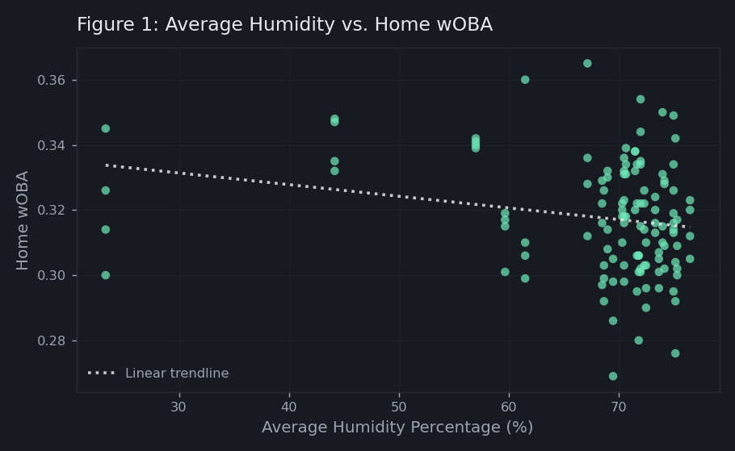

Does Humidity Affect Offensive Performance in Major League Baseball?
Question
Does average humidity affect offensive performance in Major League Baseball once environmental, ballpark, and roster characteristics are taken into account? While humid air is less dense and may allow batted balls to travel farther, it can also increase fatigue, dehydration, and cardiovascular strain on hitters. This study examines whether these competing effects produce a measurable change in a team's home weighted on-base average (wOBA).
Data
The analysis uses a panel dataset containing all 30 MLB teams over the 2021–2024 seasons. Home weighted on-base average (wOBA) serves as the dependent variable, while average humidity is the primary independent variable. Average home wOBA across the sample is 0.318, and average humidity is 68.2%. wOBA was selected because it provides a comprehensive measure of offensive production by assigning appropriate value to each offensive outcome rather than emphasizing a single aspect of hitting.
Model Variables
- Dependent variable: Home wOBA
- Primary independent variable: Average humidity
- Control variables: Average fan attendance, hitting coach years of service, average ballpark dimension, average temperature, windspeed, position player payroll, and sprint speed
- Excluded variables: Ballpark elevation (removed because of multicollinearity with humidity and temperature) and total home plate appearances (removed because of severe endogeneity)
Sources:
- Baseball Savant (Statcast) — wOBA and sprint speed
- Weather World database — humidity, wind speed, and temperature
- Ballparks of Baseball — ballpark dimensions
- Sports Library — ballpark elevation
- ESPN — average fan attendance
- Spotrac — position-player payroll
- Hitting-coach years of service — researched individually per team
Methodology
Using panel data from all 30 Major League Baseball teams across the 2021–2024 seasons, I estimate whether average humidity percentage has a statistically significant effect on offensive production, measured by home weighted on-base average (wOBA). To do so, I use Ordinary Least Squares (OLS) regression to estimate five model specifications, including a baseline model and four alternative specifications to evaluate the robustness of the results. The general form of the regression equation is presented below:
wOBAit = β0 + β1 Humidityit + γXit + εit
Where X represents a set of controls that includes average fan attendance, years of service the hitting coach has for the team, average temperature in degrees Fahrenheit, and average ballpark dimension in feet. The alternative specifications introduce position player payroll, sprint speed, annual fixed effects, the natural logarithm of position player payroll, and outlier adjustments to home weighted on-base average to evaluate whether the results remain consistent across different model specifications.
Results

Table 1 — Descriptive Statistics of MLB Teams (2021–24)
| Variable | Mean | Std. Deviation |
|---|---|---|
| Weighted On-Base Average | 0.318 | 0.018 |
| Average Humidity | 0.682 | 0.106 |
| Average Fan Attendance | 26,135.53 | 9,539.48 |
| Hitting Coach Years of Experience | 2.071 | 2.166 |
| Average Ballpark Dimension (ft) | 354.566 | 6.649 |
| Average Temperature (°F) | 73.129 | 3.934 |
| Windspeed (mph) | 6.900 | 1.111 |
| Ballpark Elevation (ft) | 517.600 | 932.578 |
| Position Player Payroll | 80,184,003.53 | 38,710,652.90 |
| Sprint Speed (ft/sec) | 27.313 | 0.379 |
Table 2 — Regression Results: Impact on wOBA
| Variable | (1) | (2) | (3) | (4) | (5) |
|---|---|---|---|---|---|
| Humidity | −0.036**(0.015) | −0.030**(0.014) | −0.031**(0.014) | −0.033**(0.013) | −0.022(0.014) |
| Average Fan Attendance | 0.001***(1.513e-04) | 0.001***(1.584e-04) | 0.001***(1.580e-04) | 0.001***(1.540e-04) | |
| Hitting Coach Years of Service | 0.001(1.540e-04) | 0.001(7.050e-04) | 0.001(6.850e-04) | ||
| Average Ballpark Dimension | −2.737e-04(2.240e-04) | −3.137e-04(2.190e-04) | |||
| Average Temperature | 0.001***(3.780e-04) |
Standard errors in parentheses. Humidity is a percentage expressed as a decimal. *** significant at α = .01, ** at α = .05, * at α = .10.
Table 3 — Alternative Specifications: Impact on wOBA
| Variable | (1) | (2) | (3) | (4) | (5) |
|---|---|---|---|---|---|
| Humidity | −0.022(0.014) | −0.022(0.014) | −0.019(0.013) | −0.022(0.014) | −0.001(0.013) |
| Average Fan Attendance | 0.001***(1.540e-04) | 0.001***(2.247e-04) | 0.001***(1.505e-04) | 4.938e-04**(2.068e-04) | 4.974e-04***(1.355e-04) |
| Hitting Coach Years of Service | 0.001(6.850e-04) | 0.001(0.001) | 0.001(0.001) | 0.001(0.001) | 0.001(0.001) |
| Average Ballpark Dimension | −3.137e-04(2.190e-04) | −3.137e-04(2.212e-04) | −3.313e-04*(1.990e-04) | −3.260e-04(2.159e-04) | −1.866e-05(2.077e-04) |
| Average Temperature | 0.001***(3.780e-04) | 0.001***(3.887e-04) | 0.001***(3.459e-04) | 0.001***(3.739e-04) | 0.001**(3.173e-04) |
| Position Player Payroll | 5.946e-11(5.527e-11) | 0.001**(3.118e-03) | |||
| Sprint Speed (ft/sec) | −0.001(0.004) | ||||
| Annual Fixed Effects | No | No | Yes | No | No |
| Natural Log — Position Player Payroll | No | No | No | Yes | No |
| Remove wOBA Outliers | No | No | No | No | Yes |
Standard errors in parentheses. Humidity is a percentage expressed as a decimal. *** significant at α = .01, ** at α = .05, * at α = .10.
Findings
- The regression results indicate that average humidity does not have a statistically significant effect on home weighted on-base average (wOBA) once environmental and team-level control variables are included. Although humidity appears statistically significant in the initial baseline specifications, the relationship disappears after controlling for average temperature, suggesting that the initial association was influenced by omitted environmental factors rather than humidity itself.
- This conclusion remains consistent across all four alternative model specifications. Adding position player payroll and sprint speed, incorporating annual fixed effects, replacing payroll with its natural logarithm, and removing the highest and lowest home weighted on-base average observations all support the conclusion that average humidity is not a statistically significant predictor of offensive production.
- Several control variables produced meaningful results. Average fan attendance, average temperature, and the natural logarithm of position player payroll were positively associated with home offensive production, while hitting coach years of service and average ballpark dimensions were not statistically significant in any specification.
- Overall, the findings suggest that any physical advantage created by reduced air density in humid conditions is likely offset by physiological factors such as fatigue and dehydration, resulting in no measurable net effect on offensive production. More broadly, the analysis demonstrates the importance of incorporating relevant control variables and testing multiple model specifications before drawing conclusions from statistical relationships.